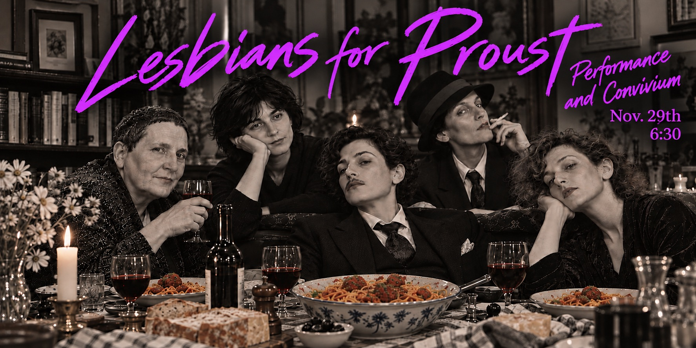

04 / project
Lesbians for Proust
A salon of performance and convivium
An evening of company, home-cooked food and recent work performed by Rosemary Carroll, Rachel Levitsky and Eon Meridian, at the studio of Libelulala in Woodstock, New York.

The evening
Food, wine, mocktails, and new writing and performance. Register for the address and to make a donation.
Performing
Rosemary Carroll
Rachel Levitsky
Eon Meridian
Rosemary Carroll
Rachel Levitsky
Eon Meridian
When
Sunday 29 November 2026
from 6:30 pm
Sunday 29 November 2026
from 6:30 pm